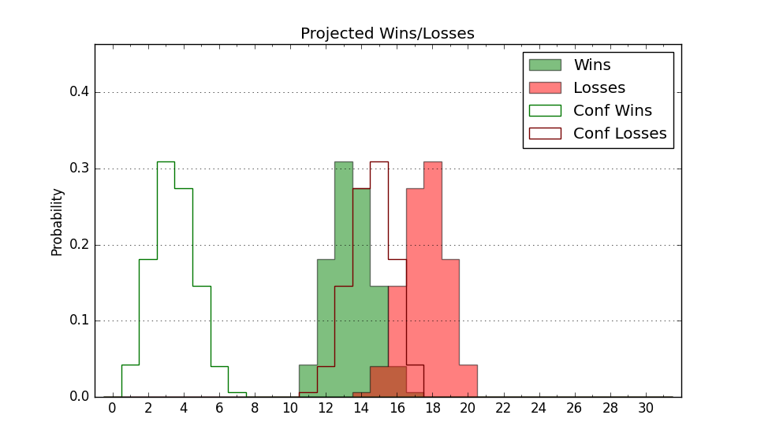

| Home | Game Probabilities | Conferences | Preseason Predictions | Odds Charts | NCAA Tournament |
| City: | Norman, Oklahoma | |
| Conference: | SEC (16th)
| |
| Record: | 1-9 (Conf) 11-12 (Overall) | |
| Ratings: | Comp.: 12.6 (72nd) Net: 12.5 (74th) Off: 120.8 (47th) Def: 108.3 (155th) SoR: 0.0 (107th) |
| Remaining | ||||||
|---|---|---|---|---|---|---|
| Date | Opponent | Win Prob | Pred. | |||
| 2/7 | @ Vanderbilt (13) | 8.4% | L 74-91 | |||
| 2/14 | Georgia (36) | 42.6% | L 85-87 | |||
| 2/18 | @ Tennessee (21) | 10.8% | L 69-83 | |||
| 2/21 | Texas A&M (40) | 45.3% | L 84-85 | |||
| 2/24 | Auburn (28) | 34.3% | L 80-84 | |||
| 2/28 | @ LSU (47) | 25.0% | L 76-83 | |||
| 3/3 | Missouri (63) | 62.3% | W 80-77 | |||
| 3/7 | @ Texas (33) | 16.4% | L 75-87 | |||
| Previous | Game Score | |||||
| Date | Opponent | Win Prob | Result | Off | Def | Net |
| 11/3 | St. Francis PA (355) | 98.7% | W 102-66 | -5.9 | 8.5 | 2.6 |
| 11/8 | @Gonzaga (8) | 6.3% | L 68-83 | -8.2 | 13.8 | 5.6 |
| 11/11 | Arkansas Pine Bluff (305) | 96.7% | W 95-69 | 4.6 | 1.3 | 5.9 |
| 11/15 | (N) Nebraska (12) | 14.3% | L 99-105 | 29.6 | -29.6 | 0.0 |
| 11/20 | Oral Roberts (314) | 97.0% | W 95-71 | 4.6 | -6.2 | -1.6 |
| 11/23 | Alcorn St. (354) | 98.7% | W 72-53 | -28.9 | 15.6 | -13.2 |
| 11/28 | (N) Marquette (115) | 66.1% | W 75-74 | 2.4 | -8.2 | -5.8 |
| 12/2 | @Wake Forest (70) | 34.1% | W 86-68 | 9.8 | 21.4 | 31.2 |
| 12/6 | (N) Arizona St. (75) | 50.5% | L 70-86 | -21.1 | -3.7 | -24.8 |
| 12/13 | (N) Oklahoma St. (65) | 47.8% | W 85-76 | 6.3 | 12.3 | 18.6 |
| 12/16 | UMKC (343) | 98.0% | W 89-67 | -3.0 | -7.3 | -10.2 |
| 12/22 | Stetson (330) | 97.5% | W 107-54 | 25.0 | 15.9 | 40.9 |
| 12/29 | Mississippi Valley St. (364) | 99.6% | W 93-69 | 14.6 | -29.8 | -15.2 |
| 1/3 | Mississippi (77) | 66.1% | W 86-70 | 12.7 | 5.4 | 18.1 |
| 1/7 | @Mississippi St. (91) | 42.5% | L 53-72 | -31.2 | 0.9 | -30.4 |
| 1/10 | @Texas A&M (40) | 19.6% | L 76-83 | -1.5 | 4.0 | 2.5 |
| 1/13 | Florida (9) | 19.5% | L 79-96 | 4.6 | -16.7 | -12.1 |
| 1/17 | Alabama (20) | 29.0% | L 81-83 | -6.3 | 13.8 | 7.5 |
| 1/20 | @South Carolina (101) | 46.7% | L 76-85 | -8.3 | -5.2 | -13.5 |
| 1/24 | @Missouri (63) | 32.7% | L 87-88 | 4.2 | 2.2 | 6.5 |
| 1/27 | Arkansas (22) | 30.3% | L 79-83 | -1.6 | 1.5 | -0.1 |
| 1/31 | Texas (33) | 40.0% | L 69-79 | -15.3 | 1.9 | -13.4 |
| 2/4 | @Kentucky (30) | 14.5% | L 78-94 | 12.0 | -21.8 | -9.8 |
| Stats & Trends | |||||
|---|---|---|---|---|---|
| Current | Day | Week | Month | Season | |
| Composite | 12.6 | -0.0 | -1.1 | -3.5 | -5.8 |
| Comp Rank | 72 | +1 | -4 | -20 | -36 |
| Net Efficiency | 12.5 | -0.0 | -1.0 | -3.2 | -- |
| Net Rank | 74 | +1 | -5 | -16 | -- |
| Off Efficiency | 120.8 | +0.0 | -0.3 | -2.8 | -- |
| Off Rank | 47 | -- | -5 | -26 | -- |
| Def Efficiency | 108.3 | -0.0 | -0.7 | -0.4 | -- |
| Def Rank | 155 | -1 | -7 | +10 | -- |
| SoS Rank | 58 | -- | +16 | +219 | -- |
| Exp. Wins | 13.5 | -0.0 | -0.8 | -4.3 | -4.6 |
| Exp. Conf Wins | 3.5 | -0.0 | -0.8 | -4.3 | -4.7 |
| Conf Champ Prob | 0.0 | -- | -- | -0.6 | -2.6 |

| Advanced Stats | ||
|---|---|---|
| Stat | Value | Rank |
| Off Eff FG % | 0.553 | 67 |
| Off Ast Ratio | 0.153 | 134 |
| Off ORB% | 0.341 | 77 |
| Off TO Rate | 0.118 | 18 |
| Off FT Ratio | 0.353 | 184 |
| Def Eff FG % | 0.494 | 113 |
| Def Ast Ratio | 0.137 | 90 |
| Def ORB% | 0.299 | 152 |
| Def TO Rate | 0.138 | 241 |
| Def FT Ratio | 0.325 | 119 |